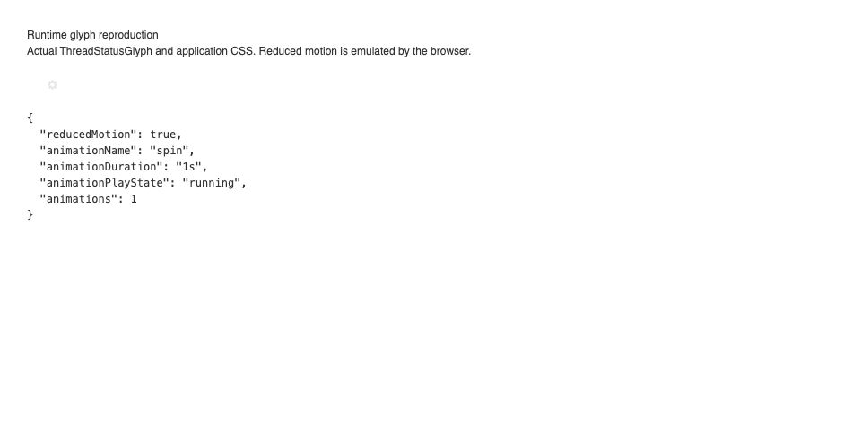
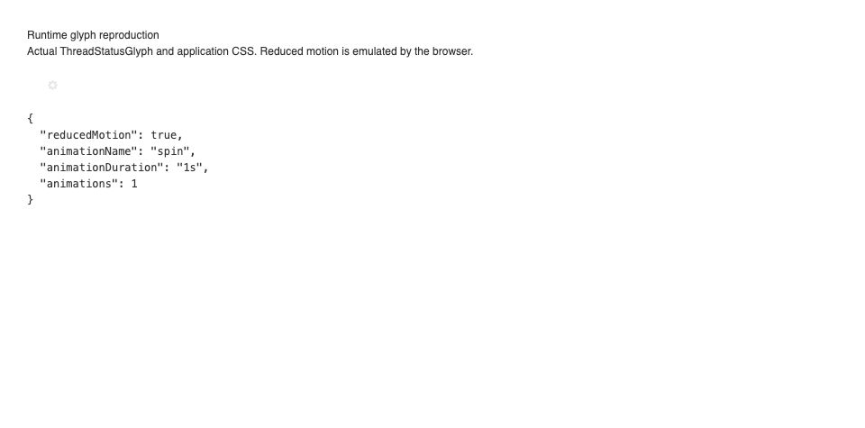
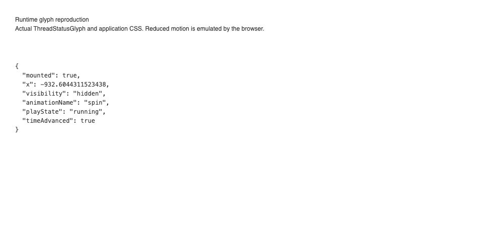
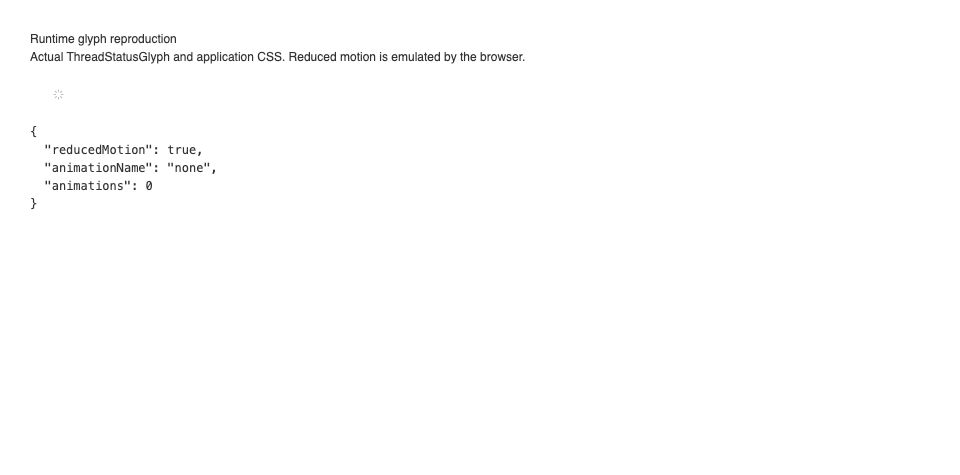

#3921 · Runtime glyph animation does not honor reduced motion
Trusted base: e865697f56bea89f3413dd4cc7fae964850d20a0
REPRODUCED · Root-cause confidence: high
TL;DR
The actual runtime status glyph keeps rotating when Chrome reports a reduced-motion preference. Its spin utility has no reduced-motion override. Both a regression test and a browser fixture reproduce this in two clean checkouts of trusted main. A one-line CSS utility change stops the animation while preserving the status glyph and its accessible label. The original CPU percentage was not remeasured.
Claims vs findings
| Claim | Finding |
|---|---|
| Reduced motion still permits rotation | Verified in Chrome with the real component and application CSS: spin, 1s, one active animation. |
| Moving the glyph offscreen leaves animation active | Verified in a fixture with an offscreen, visibility:hidden wrapper: mounted, running, animation time advances. This is not a full application sidebar interaction. |
| Hidden sidebar consumes about 12.8% of a core | Unverified. No claim that an active animation proves that specific CPU cost. |
Environment
Darwin 25.6.0 arm64; Node 22.22.3; Corepack pnpm 9.15.0; plugin-owned local headless Chrome. Two temporary source checkouts at the base above. Isolated Vite fixtures used ports 49121 and 49122; no BB server, provider, user data, or database was used. The default pnpm launcher was broken; a temporary Corepack shim enabled the frozen install. Trusted-base full Turbo build completed: 58 tasks successful.
Minimal reproduction
- Check out the recorded commit from get-bb/bb and run
pnpm install --frozen-lockfile --prefer-offline, thenpnpm exec turbo run build. - Apply regression.patch using
git apply regression.patch. - Run
pnpm exec turbo run test --filter=@bb/app -- ThreadRow.test.tsx.
Expected: reduced-motion override present on the runtime glyph. Actual: AssertionError: expected [ 'animate-spin', …(2) ] to include 'motion-reduce:animate-none' Tests: 1 failed | 80 passed (81)
diff --git a/apps/app/src/components/sidebar/ThreadRow.test.tsx b/apps/app/src/components/sidebar/ThreadRow.test.tsx
index c3eff0840..9fed48fde 100644
--- a/apps/app/src/components/sidebar/ThreadRow.test.tsx
+++ b/apps/app/src/components/sidebar/ThreadRow.test.tsx
@@ -546,6 +546,25 @@ describe("ThreadRow", () => {
expect(Array.from(errorIcon.classList)).not.toContain("animate-shine-icon");
});
+ it("disables runtime glyph rotation when reduced motion is requested", () => {
+ renderThreadRow({
+ hasComposerDraft: false,
+ thread: createThread({
+ status: "active",
+ runtime: {
+ displayStatus: "active",
+ hostReconnectGraceExpiresAt: null,
+ },
+ }),
+ });
+
+ const runningIcon = screen.getByLabelText("Thread working");
+ expect(runningIcon.getAttribute("data-icon")).toBe("Loading");
+ expect(Array.from(runningIcon.classList)).toContain(
+ "motion-reduce:animate-none",
+ );
+ });
+
it("keeps the runtime spinner ahead of a plugin status", () => {
setPluginThreadRowStatus("thr_test", "composer-status-test", {
icon: "AiContentGenerator01",
Browser reproduction: place issue-3921.html and issue-3921.tsx in apps/app. From apps/app run pnpm exec vite --config vite.config.ts --host 127.0.0.1 --port 49121 --strictPort. Open /issue-3921.html with Chrome DevTools reduced-motion emulation set to reduce. Inspect the SVG labelled Thread working. This fixture imports the actual component and stylesheet; it does not recreate the spinner CSS.
import React from "react";
import { createRoot } from "react-dom/client";
import { ThreadStatusGlyph } from "./src/components/thread/ThreadStatusGlyph";
import "./src/app.css";
createRoot(document.getElementById("root")!).render(
<main style={{ padding: 40, fontFamily: "sans-serif" }}>
<h1>Runtime glyph reproduction</h1>
<p>Actual ThreadStatusGlyph and application CSS. Reduced motion is emulated by the browser.</p>
<div id="glyph" style={{ margin: 30 }}>
<ThreadStatusGlyph
hasPendingInteraction={false} hasUnsubmittedDraft={false}
hasUnreadError={false} hasUnreadSuccess={false}
isBackgroundAgentActive={false} isBackgroundCommandActive={false}
isGoalActive={false} isPlanModeActive={false}
isRuntimeActive={true} isWorkflowActive={false} queuedWork={null}
/>
</div>
<pre id="result" />
</main>,
);
Before: reducedMotion=true, animationName=spin, animationDuration=1s, animations=1 After: reducedMotion=true, animationName=none, animations=0 After, normal motion: animationName=spin

Root cause
The runtime branch adds unconditional animate-spin. The theme reduced-motion rules handle other animations but do not disable this utility. The desktop sidebar keeps children mounted and moves its panel offscreen, adding visibility:hidden after its transition. Neither mounting nor visibility cancels a CSS animation; the fixture confirms its timeline continues. Rendering cost requires separate measurement.
Verification
The same agent created a second clean detached worktree at the recorded commit, performed a frozen install, added only the regression test and fixture, and repeated the same Turbo test command. It again produced 1 failed and 80 passed. A separate Vite server on port 49122 again returned reducedMotion=true, animationName=spin, animationDuration=1s, animations=1. No correction to the reduced-motion finding was required. This was repeated verification by the same agent, not an independent review.


Proposed fix and tested result
Add motion-reduce:animate-none alongside the runtime spin utility. The regression passes after this change; all 81 ThreadRow tests pass. App lint, typecheck and production build pass. Formatting and git diff --check pass. Chrome confirms zero animations under reduced motion and spin under normal motion. The fix changes 21 text lines across two existing app files (20 additions, one deletion), with no dependencies or contract changes. It does not disable animations offscreen for users who allow motion.

Related issues and PRs
No linked open pull request appeared in the issue timeline or the open-PR search for 3921 at investigation time. No external links supplied by the issue were fetched. Issue claims and suggested changes were treated as untrusted data; the test and fix were derived from trusted repository source.
Appendix
Logs: first failing test, second failing test, passing tests, app checks, trusted-base build. Local paths are removed from published logs. Screenshots are actual browser captures.